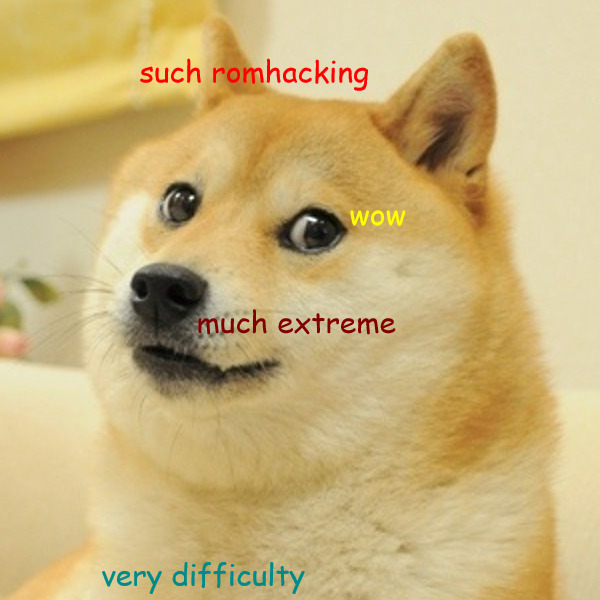
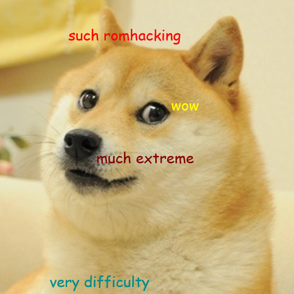
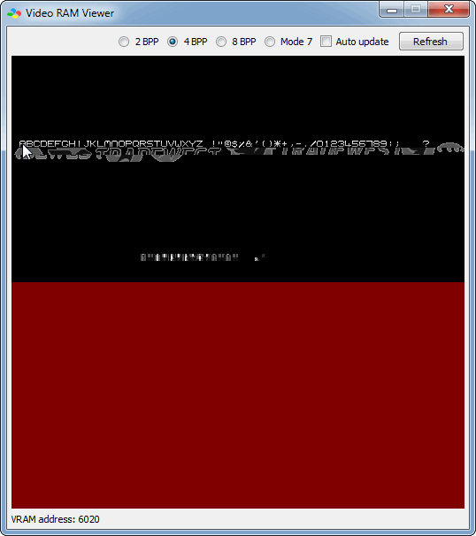
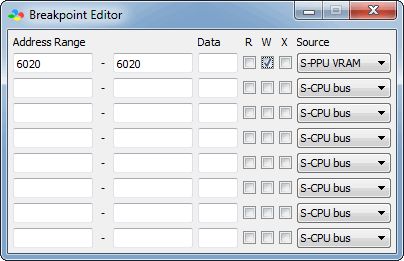
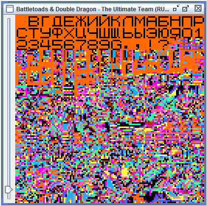
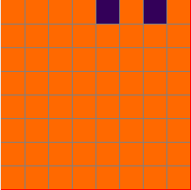
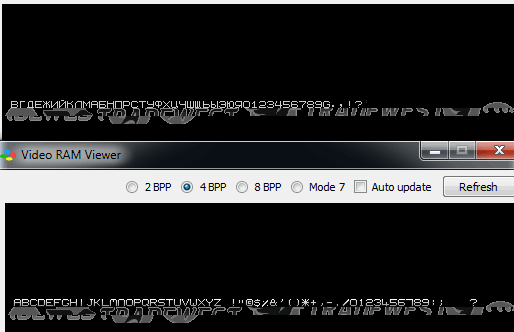
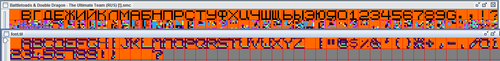
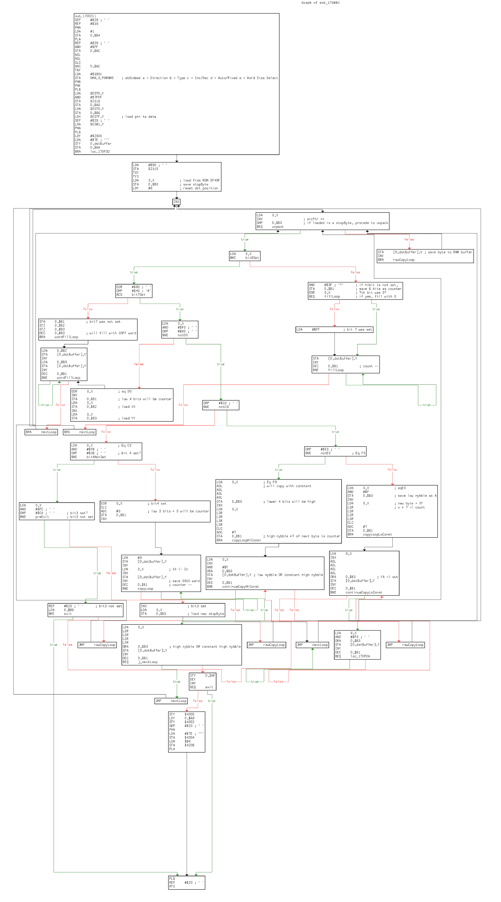

Иногда бывает, что в детстве на тебя что-то производит сильное впечатление, но потом забывается и спит долгие годы. Потом оно случайно всплывает в памяти, ты долго мучаешься, ищешь это в сети и наслаждаешься теплыми минутами ностальгии. У многих из нас так было с эмуляцией вообще. У меня, кроме прочего, сейчас вызывает ностальгию середина двухтысячных, когда переживала расцвет ромхакинг и fan translation сцена. Шедевр считался орденом посвященных, его члены - адептами, владеющими тайными знаниями. Сами адепты по мере сил поддерживали эту дымку загадочности. Одна из новостей о переводе на Шедевре так запомнилась сочными описаниями процесса взлома, что через двенадцать лет мне захотелось отыскать ее. В памяти у меня остались только обрывки фраз о том, как взломщик рассказывал остальным о своих способах: “..шаманскими методами..” и “..как он ни пытался объяснить, никто не понимает!” Казалось, что игра настолько изощренна, что даже адептам не под силу понять просто объяснение взлома, не то что уж взломать её. Сама заметка нашлась быстро - новость от 21.11.2004 про перевод Battletoads & Double Dragon - The Ultimate Team на SNES. Чтобы долго не искать, ниже ее скриншот (кликни для увеличения):
 

Утерев рукавом слезы восхищения, давайте попробуем разобраться, что не так с этой игрой, не прибегая к помощи подсознания.
Не надеясь, что графика лежит не запакованной, откроем сразу РОМ Battletoads & Double Dragon - The Ultimate Team (U) [!].smc в неплохом отладочном эмуляторе bsnes-plus. Запускаем bsnes.exe, а не bsnes-accuracy.exe, затем откроем просмотрщик видеопамяти: Tools -> Debugger -> S-PPU -> Video RAM Viewer и на первом же экране видим в режиме 4bpp загруженный шрифт (он используется для строки “presents”): 
Буква А загружена по адресу $6020, отследим запись в это место, поставив breakpoint: 
И перезапустив игру. Останов сработал:
Breakpoint 0 hit (1).
97e000 plb A:3000 X:fa57 Y:2000 S:01fa D:0000 DB:9d nvMxdIZc V: 59 H: 146 F: 3откроем Disassembler, чтобы понять, в каком месте мы оказались:
97dfe6 iny
97dfe7 beq $e000
97dfe9 sty $4305
97dfec ldy $a8
97dfee sty $4302 ;4302-4303 rwl++++ A1TxL - DMA Source Address for Channel 0
97dff1 sep #$20
97dff3 pha
97dff4 lda #$7e
97dff6 sta $4304
97dff9 lda $00b4
97dffc sta $420b ;420b - MDMAEN - DMA Enable
97dfff pla
97e000 plb ;мы здесь
97e001 rep #$20
...По ближайшему коду можно понять, что, во-первых, шрифт копируется в VRAM с помощью DMA, и, в регистр адреса источника DMA нулевого канала ($4302) записано значение из Y, которое до момента срабатывания останова не поменялось: 0x2000. Так что, если проверить сейчас RAM, который в SNES начинается с $7F0000, то по адресу $7F2020 можно как раз увидеть распакованную графику буквы А. Осталось проверить, кто распаковывает её сюда. Ставим останов на запись в $7F2020 и перезапускаем игру.
Breakpoint 0 hit (1).
97df4a sta [$a8],y [7e2020] A:307e X:f4a3 Y:0020 S:01fa D:0000 DB:9d nvMxdIzC V: 87 H: 720 F: 20x307E в аккумуляторе сразу говорит о том, что мы в правильном месте формирования буквы А. В Disassembler’е:
97df37 txy
97df38 tyx
97df39 lda $0000,x
97df3c sta $b0
97df3e ldy #$0000
97df41 inx
97df42 lda $0000,x
97df45 inx
97df46 cmp $b0
97df48 beq $df4f
97df4a sta [$a8],y ;мы здесь
97df4c iny
97df4d bra $df42
97df4f lda $0000,x
...Код говорит нам, что графика сохраняется в RAM, исходя из некоторых условий. То есть, мы в процедуре распаковки. Несколькими строками выше видно, что сама значение аккумулятора берется из адреса, по смещению Х = $F4A3, при этом Data Bank register DB = 0x9d, а из SNES memory mapping мы знаем, что банки 80−BF - это картридж. Чтобы найти точно, откуда значение загружается первый раз (начало сжатой графики) поставим останов на исполнение по адресу $97df39:
Breakpoint 0 hit (1).
97df39 lda $0000,x [9df49f] A:3080 X:f49f Y:f49f S:01fa D:0000 DB:9d NvMxdIzc V: 84 H: 820 F: 2Начало сжатой графики в памяти приставки $9d:f49f. Чтобы найти смещение в ROM этих данных, просто найдем сочетание байт из адреса $9df49f в РОМе любым хексредактором. Это смещение 0xEF49F. Посмотрев это место сразу в тайловом редакторе, мы увидим нечто слабо напоминающее буквы A и B, что говорит о том, что часть графики лежит в несжатом виде. Если внимательнее посмотреть на кусок кода из дизассемблера выше:
97df39 lda $0000,x ;грузим байт из РОМа
97df3c sta $b0 ;сохраняем в $b0
97df3e ldy #$0000 ;обнуляем указатель в буфер вывода
97df41 inx ;смотрим на следующий байт
97df42 lda $0000,x ;грузим байт из РОМа
97df45 inx ;смотрим на следующий байт
97df46 cmp $b0 ;он равен первому байту?
97df48 beq $df4f
97df4a sta [$a8],y ;нет, не равен - сохраняем его в буфер вывода
97df4c iny ;смещаемся в буфере вывода
97df4d bra $df42 ;идем к следующей проверке
97df4f lda $0000,x ;да, равен, сейчас будут другие действия...
...То есть в начале блока данных, которые нужно хранить в несжатом виде, стоит специальный байт. Он не встречается в этом блоке ни разу. Распаковщик, сравнивая поочередно просто выводит эти байты в буфер и VRAM. Как только нужно применить алгоритм разжатия (RLE или LZ, например), в данных встречается этот байт и код приступает к распаковке. На этом месте у меня начинает формироваться идея, как можно без анализа кода, поменять графику. Откроем переведенный РОМ в тайловом редакторе по смещению 0xEF4A0, т.к. по 0xEF49F будет лежать контрольный байт, который не относится к несжатому блоку.

Ну так и есть: весь кусок сжатой графики просто удален, и поверх пустоты нарисован русский шрифт. Это абсолютно легально для распаковщика: главное, чтобы во всем шрифте не встречался контрольный байт из 0xEF49F (он равен 0x0A). Чтобы гарантировать это, можно проанализировать графику своего шрифта, найти неиспользуемый байт и записать его в 0xEF49F. Правда, для этого надо понимать, что такой байт вообще существует. В переводе Шедевра байт не изменен. Если в измененном шрифте встречаются все 256 байтов, то у распаковщика есть функция смены этого байта специальным кодом. Правда, для этого надо знать этот код, да и выравнивание в тайловом редакторе такого шрифта собьётся - шрифт после смены контрольного байта просто так не нарисовать. Но что вообще значит не встретить в распакованной графике байт 0x0A? Вообще, SNES использует необычный формат графики - 4bpp planar, composite (2x2bpp). Но главное, как и в большинстве других форматов, один байт по-прежнему представляет собой один сканлайн в тайле: строку из 8 пикселей идущих подряд. Каждый выставленный бит означает горящий пиксель в определенном слое цвета. Потом слои комбинируются и получается определенный конечный цвет пикселя. 0x0A, например, выглядит в верхнем сканлайне так:

Итак, если в каком-нибудь сканлайне какого-нибудь цвета будут гореть только 2 и 4й пиксели справа, то это будет сериализовано как байт 0x0A и воспримется как сигнал к считыванию команды распаковки. Если ты рисуешь 16-ю цветами, когда-нибудь такая ситуация встретится. Но если рисовать только одним цветом, вероятность именно такого сканлайна небольшая - да и если он встретится, можно легко изменить сканлайн, слегка скорректировав форму буквы (обнаружив испорченную распакованную графику в VRAM после загрузки). Поэтому в оригинале шрифт нарисован с градиентом в 16-ти цветах, а в переводе в одном (12-м цвете оригинальной палитры). Что, кстати, не очень бросается в глаза.

Понятно, что для реализации надо еще знать и область сжатого шрифта, чтобы понимать где можно рисовать. Это несложно - корраптером или руками в хексредакторе портим по очереди байты, проверяя каждый раз загруженный в память распакованный шрифт. И так, пока не дойдем до конца шрифта. Есть у такого хака и еще один очевидный недостаток: графику сжимали, чтобы в отведенное место вместить больше графики. В переводе шрифт - один большой неупакованный блок, поэтому в него влезло на 11 символов меньше, чем в оригинале.

Вот так, буквально двумя breakpoint’ами можно многое узнать о формате графики в этой игре и уже подменить ее неупакованной. Для нормальной перерисовки, конечно, нужно проанализировать код распаковки, понять алгоритм, написать распаковщик и упаковщик. Для анализа лучше загрузить РОМ в IDA. В версии 6.8 в ней по умолчанию есть загрузчик .smc файлов, так что с ней мучиться не придется. Взглянув на код в районе $97df4a мы с удивлением увидим разумный и приятно (для ассемблера) написанный код распаковщика своеобразного RLE (кликни для увеличения):  Если коротко, в командном байте RLE закодирована команда разновидности RLE и счетчик (или повторяющийся полубайт). Команд всего девять, включая прекращение распаковки. В основном, позволяет кодировать последовательности, вроде повторяющихся подряд байт, 16-битных слов, чередующихся нулями слов, чередующихся определенным полубайтом байт и так далее. Я написал распаковщик, заинтересованные могут посмотреть код на Хаскелле здесь.
По состоянию на 2016й, по-прежнему нет перевода с нормально перерисованной графикой, так что, если найдутся желающие, дайте мне знать, и я постараюсь написать упаковщик под этот формат.
tl;dr Игра позволяла хранить данные неупакованными, пока в данных не встретится особый байт. GottaX использовал это, разместив на месте сжатой графики свою несжатую.
© Copyright 2020, Griever


{kind=link}